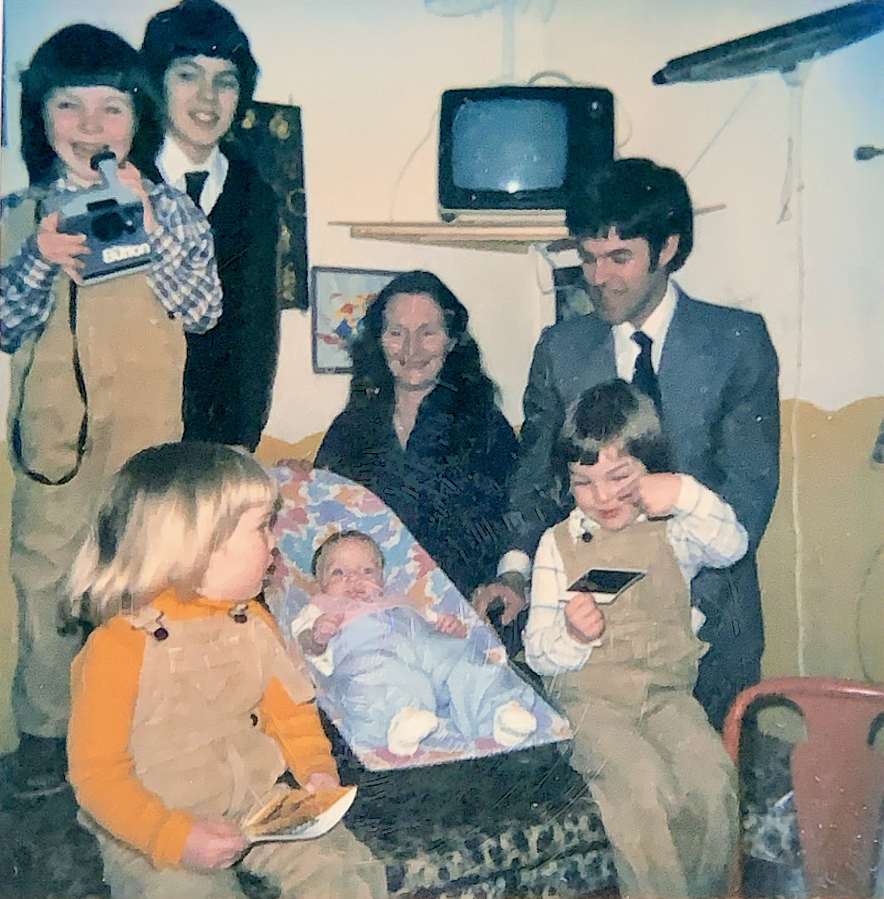
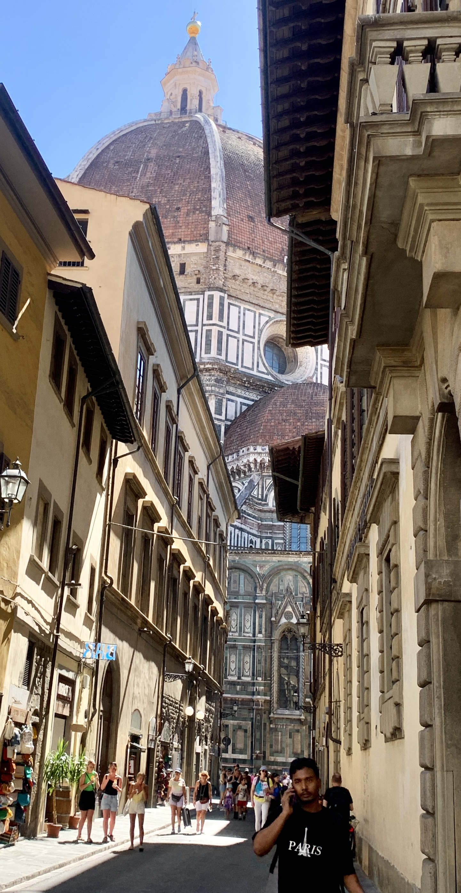
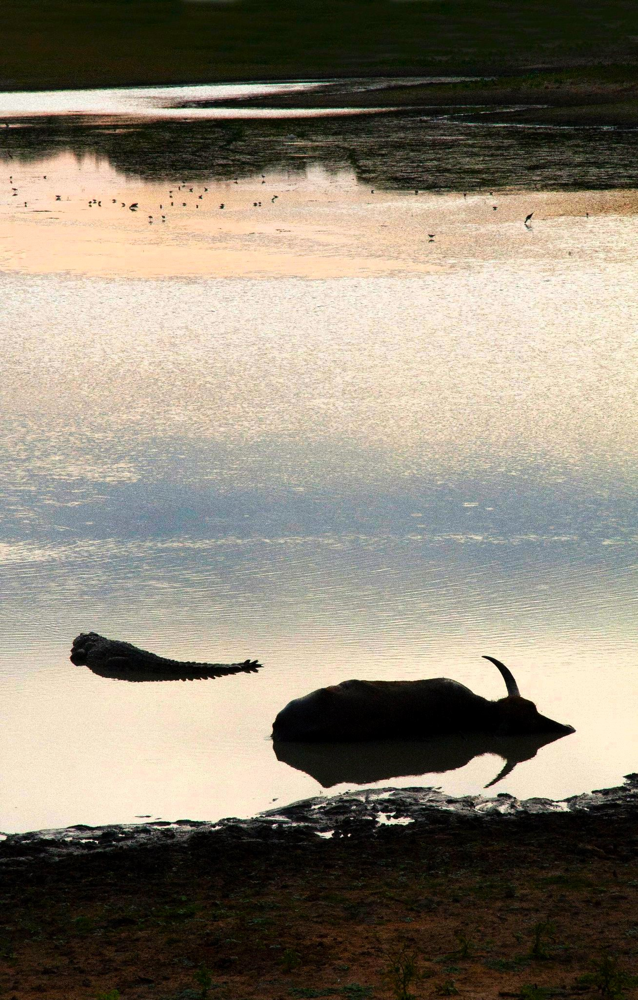
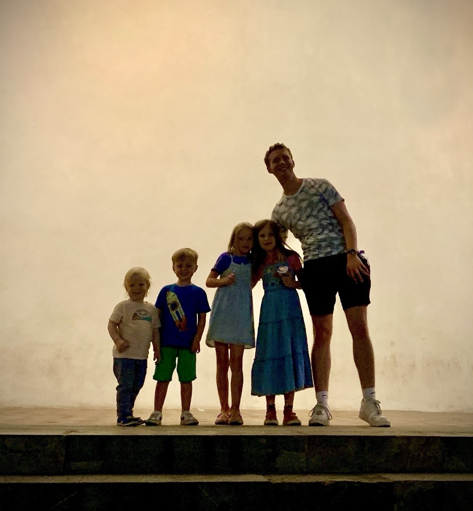
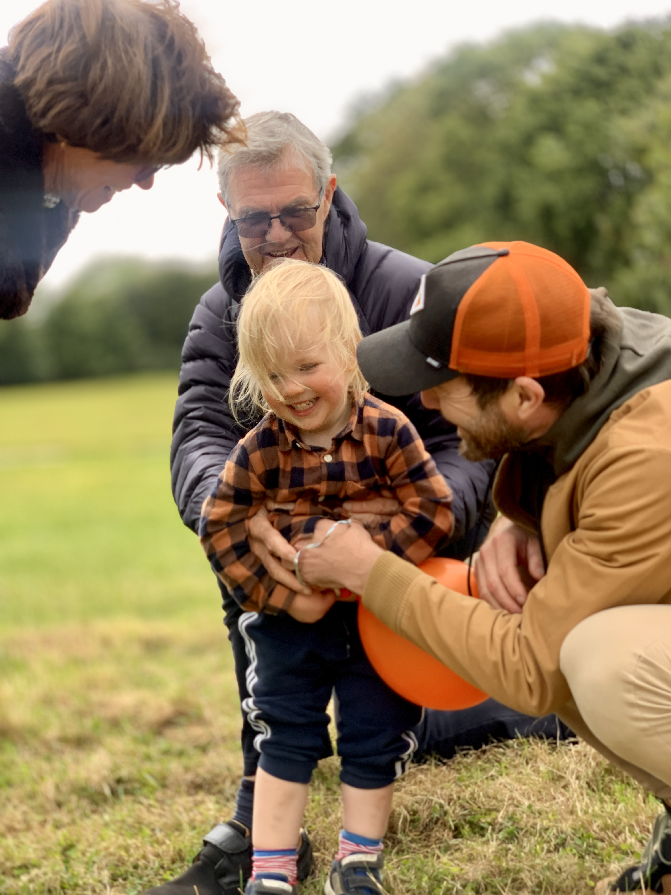
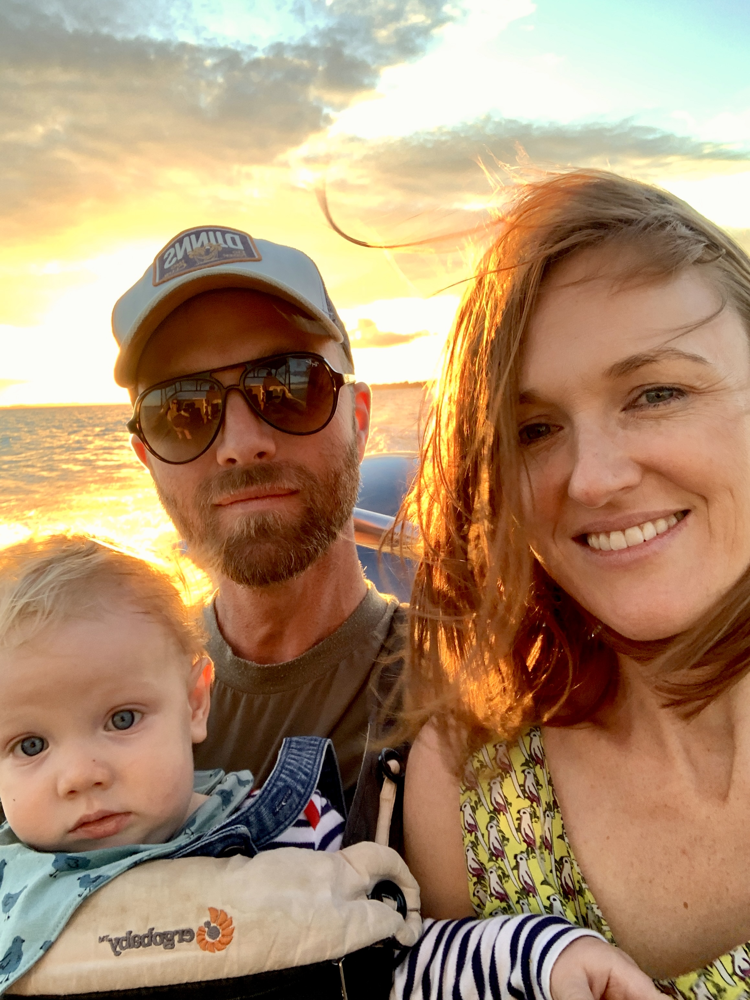
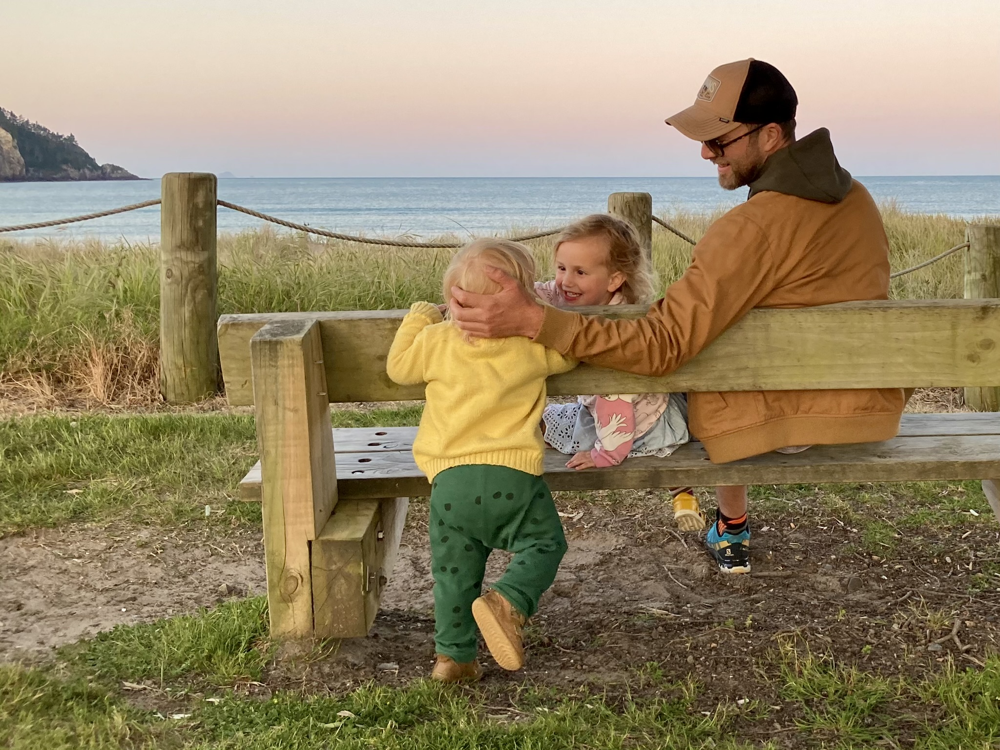

The buildings surrounding a small town square in Ibiza. I think we
were hunting down a covid test lab. This would have been our first trip abroad since lockdowns. I
remember getting confused about parking while Rosie found the strange white cubicle where we had our
tests done.

With the family in February '83. That's me in the middle. I was being baptised
on my Grandma's orders. Which explains my brothers wearing their smart matching cord dungarees.
40 years later.
On the beach in Auckland where Rosie grew up.
Rangitoto in the background looms pretty large over the city. I absolutely love it. One of an
endless supply of volcanos dotted around the city, I think it's the only non
extinct/dormant one.
it erupted about 600 years ago. Pretty sure I was told it's not gonna go any time soon...
I got in to a habit of making slideshows of images made with AI to entertain
my son.
Florian + dragon.
Florian + dinosaur + digger etc...
See above.
On the Heath in the summertime, having a picnic under an oak tree. Pretty
perfect.
This is in the Marlborough region, at the top of the South island of New
Zealand. Lots of stunning vineyards and lots of people cycling between them getting drunk. I
remember fantails following behind us as we explored the area around our Airbnb. They go after small
insects you disrupt from
the path as you walk.

The Duomo in the center of Florence. It was painfully hot and extremely busy
in
the city. The streets are narrow with tall buildings so the Cathedral surprised us as we turned a
corner
and stumbled upon it.
Taking photos of flowers instead of working.

Friends lined up and told to jump. Think I went overboard with the
pretend lens flare.

Some of my nieces and nephews somehow caught standing still.

My beautiful boy Florian on a beach in Sussex.

On a road trip in New Zealand. I think this is Lake Hawea in the South Island.
We would have been driving to Wanaka for the night then on to Queenstown. One of the more beautiful
places I've ever been. They filmed a lot of Lord of The Rings here I was told. We stayed in an
amazing
Airbnb high up in
the
mountains, and I think I remember not really appreciating it due to baby sleeping issues.
On a campsite by a lake at the bottom of Mount Snowdon. I arrived at night in
total darkness, and woke up to an unbelievably beautiful scene. I remember low mist and kayaks
gliding through the mirrored surface of the water.

On a hike up a mountain in Corsica. I think the stacked rocks, or cairns, were
originally meant to help navigation along the route. They now seem to annoy people more than
anything. "Natural graffiti" is a phrase I heard, done just for the sake of Instagram. This photo
was taken about 15 years ago and it already seemed to be pretty rampant. People wanting to
leave some mark of their presence I guess. Like a new age version of carving your name in a tree.
Monkeys are absolutely everywhere you look in Kandy, up in the hills in the
middle
of Sri Lanka. This one looked more menacing than most.
I took a lot of 10-15 second videos while we were in New Zealand thinking I'd
at some point get round to editing them all together - which hasn't happened.
I think this is on a beach in the Coromandel, a peninsular a couple of hours drive from Auckland
where Rosie's family sometimes go for long weekends.